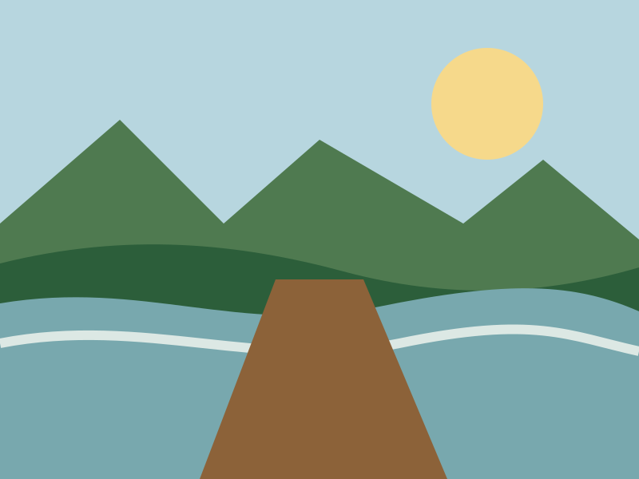
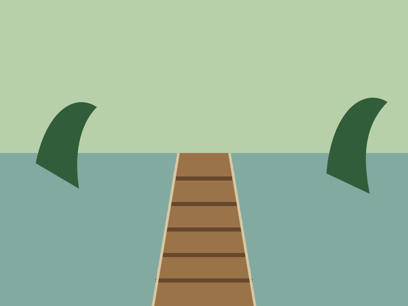
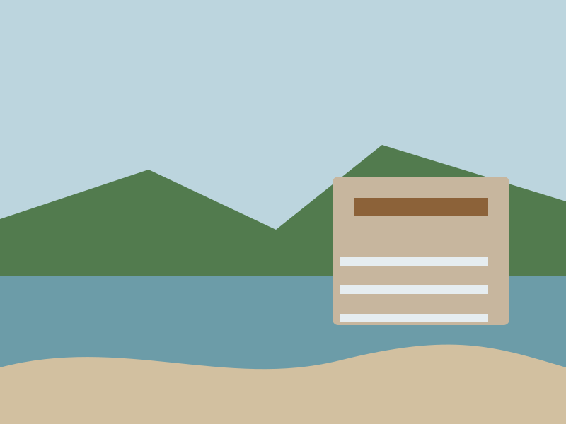

Guide Progress: Step 6 of 8 (75%)
Moraine Hills Through the Seasons
Preview morning lake reflections, wetland boardwalks, wildlife, and trail gear.



Guide Progress: Step 6 of 8 (75%)
Preview morning lake reflections, wetland boardwalks, wildlife, and trail gear.


